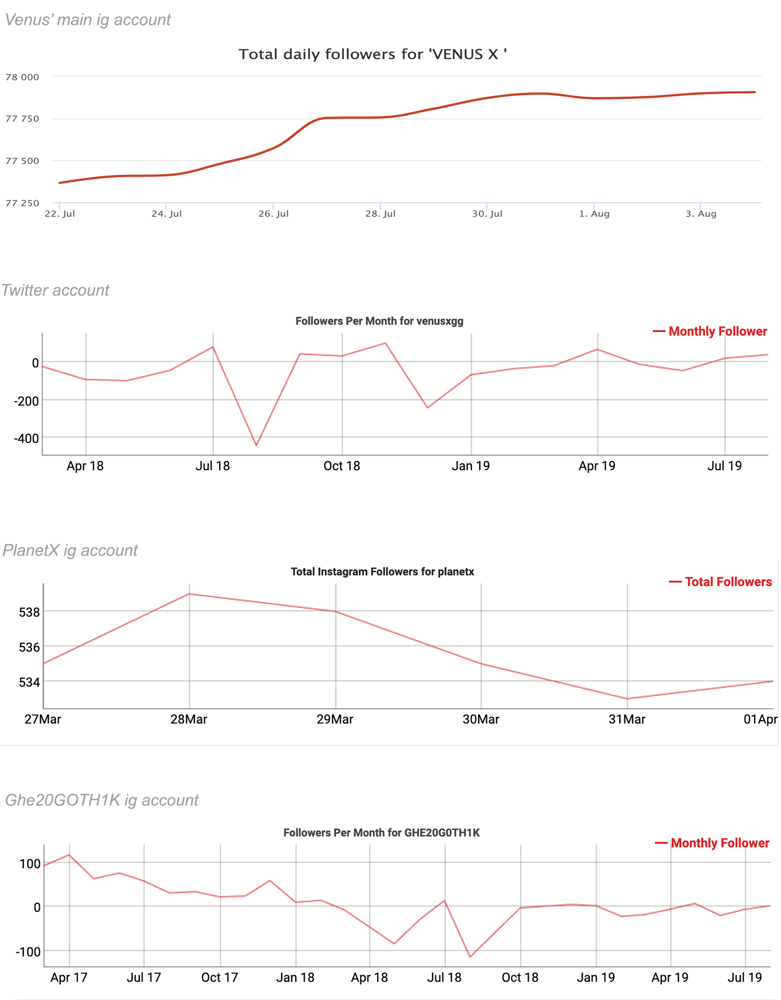
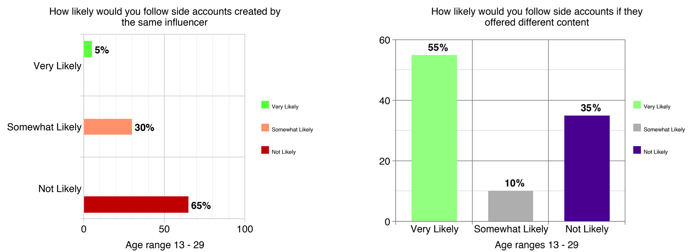
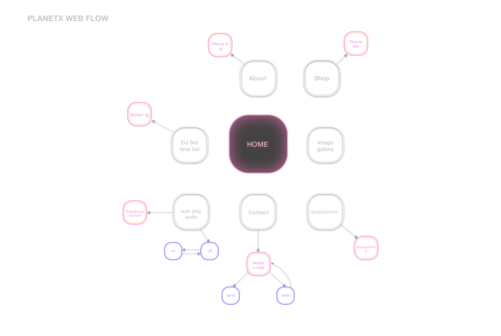
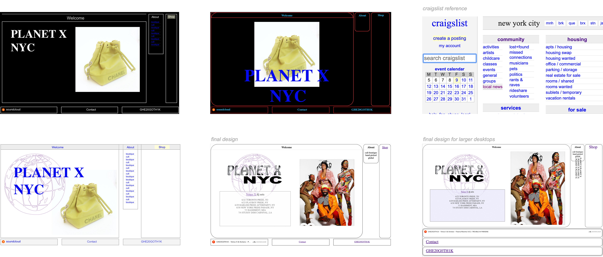
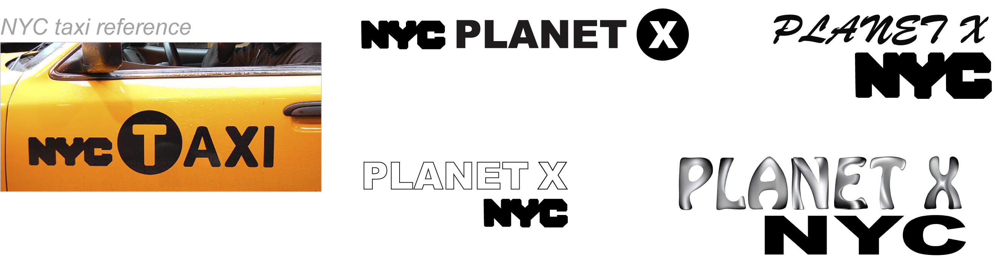

Tools used : Figma | HTML & CSS | Adobe Photoshop | Adobe Illustrator
Improve user experience by creating a singular web and mobile platform. Making it easier for followers to track all of Venus' various projects.
Venus X is a DJ with as many as five separate social media platforms. In addition, she owns a separate boutique called PLANET X. Locating PLANET X’s Depop site proved burdensome, as many users on the platform used the same moniker. There was also no singular site to keep track of her DJ set dates.
Re-designed a website and mobile app that functioned as a nucleus, which directed followers to all of Venus' various side platforms. This would prevent the loss of followers and increase the amount awareness to her work.
After some research, the data suggested that only 1 out of 5 of Venus' accounts was generating an increase in followings. The rest of the accounts all displayed negative, fluctuating followings. I then went on to conduct a poll. The poll asked how likely a person would follow a side account created by an influencer they had already followed. The outcome was poor. As the majority claimed that they were less likely to follow a sister account. However, a more specific poll was conducted. This poll questioned whether a person would follow a side account if the account offered different content. This time the majority claimed they would. Only one of Venus' accounts did not offer different content, that being her twitter. This gave me enough evidence that the creation of a main landing page would be an ideal method to give her other accounts better exposure.
 I then went on to create iterations of how I conceptualized the web page to flow. It was essential the web page was based off of a nucleus structure. From the research conducted, I went onto designing a main nucleus that would hold options to introduce Venus' various platforms.
Each of her different accounts posses some dosage of fun, edge, and rawness. Venus' style can be categorized as fashion goth, but over the years it has begun to look more streetwear inspired. Initially I played around with a black background, but later saw that it was too much of a simplistic interpretation of goth. Craiglist immediately came to mind. Craiglist has many times been categorized as “ugly design”. Subculture has strong ties with irony, and Venus' audience are part of an underground community. Irony is deviant, and "ugly design" is definitely a rebellion to mainstream web design. I took the skeleton idea of craiglist and complemented it with rounded shapes. Rounded corners give the page a fitter, stylistic look.
The blinking "welcome" header, animated globe, fading purple set box, and moving planetX marquee energize the page. The movement lightly mimics the pulsation felt at the club. The colour black finds its way back as it becomes useful in the shop container. A crosshair pointer hovers over and the box is gradually filled with black. These animations paired with a clean white format make it both simple and absorbing enough for a viewer to desire to stay and interact with the page.
The logo of PlanetX went through a couple iterations. I took influence from the font displayed on NYC taxis. PlanetX is New York based, so it only made sense to take inspiration from the city itself. In the end a focus group decided that the Chrome text presented the best interpretation of cool and raw.
This project proved difficult at first, since there were so many sites to be handled. However, after working through many of my style interpretations, I realized I only needed to create a universal aesthetic that appealed to all Venus' multidisciplinary projects. Not only did I discover a style that balanced all of Venus' projects, but my personal aesthetic came through strong in this project. My aesthetic has special attachment to balance, with a crucial attention to cleverly unveiling a brand's ethos.